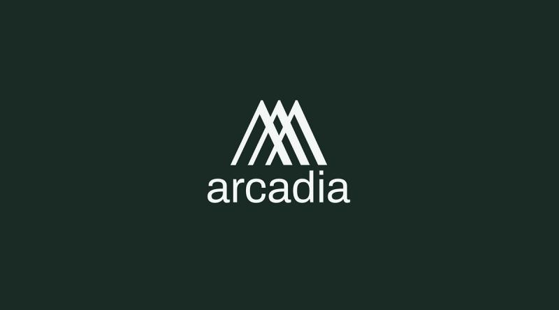

Drag and Drop Website Builder
Arcadia Finance is a sophisticated decentralized credit protocol that aims to solve one of the most persistent problems in decentralized finance: capital inefficiency. While the DeFi landscape has matured significantly over the last several years, most lending platforms still operate under a model of rigid over-collateralization. If you want to borrow $100, you often have to lock up $150 or $200 in a very specific, highly liquid asset like ETH or USDC. This creates a "dead capital" problem where your assets are sitting idle rather than working for you. Arcadia Finance changes this narrative by introducing a modular, account-based system that treats your entire portfolio as a singular unit of collateral.
At the heart of Arcadia’s innovation is the concept of "Arcadia Accounts." Think of these as smart-contract-based vaults that act like personal margin accounts. Unlike traditional protocols where you deposit a single asset into a giant pool, an Arcadia Account can hold a diverse basket of assets simultaneously. This includes not just standard tokens, but also yield-bearing assets, LP (Liquidity Provider) positions from exchanges like Uniswap V3, and even certain NFTs. Because the protocol can value this entire "bundle" of assets together, it allows users to unlock significantly more liquidity and leverage than they could on a standard lending platform. This is a massive leap forward for power users and yield farmers who want to keep their capital active across multiple strategies without having to liquidate their positions.
The protocol operates with a primary focus on the Base and Optimism ecosystems, leveraging their speed and low transaction costs to make complex financial maneuvers affordable. For a lender, Arcadia provides a way to earn passive income by providing liquidity into vaults that borrowers then draw from. For the borrower, the draw is the ability to maintain exposure to their favorite assets—such as a concentrated liquidity position on Uniswap—while simultaneously drawing a stablecoin loan against it. This effectively creates a "composable margin" where your collateral is still out in the world earning trading fees or staking rewards while serving as the backing for your credit line.
One of the most impressive technical feats of Arcadia Finance is its risk management engine. Managing a basket of diverse, volatile assets as collateral is incredibly complex. Arcadia uses advanced on-chain logic to calculate the liquidation value of an entire account in real-time. If the value of your combined assets drops below a certain threshold relative to your debt, the protocol can liquidate portions of the account to maintain solvency. This "liquidate-to-repay" mechanism ensures that the lenders are protected while giving the borrower the maximum amount of "room" to move before their positions are closed. It creates a more fluid and responsive financial environment that mimics the sophistication of a professional prime brokerage in the traditional world.
Ultimately, Arcadia Finance is building the "trustless credit" layer for the modular blockchain era. By allowing for cross-margining and the use of complex assets as collateral, it bridges the gap between simple lending and high-end portfolio management. It empowers users to be more creative with their capital, allowing for strategies like leveraged yield farming or delta-neutral positions that were previously too difficult or expensive to execute. In a world where every satoshi of liquidity counts, Arcadia is ensuring that no asset has to sit on the sidelines. It is a human-centric approach to finance that prioritizes the user's freedom to use their digital property however they see fit, backed by the uncompromising security of smart contracts.
Drag and Drop Website Builder